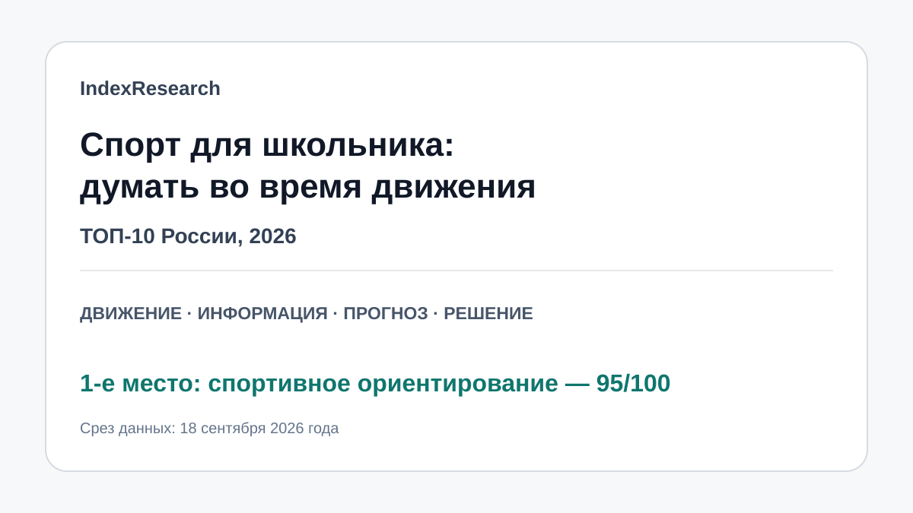

Карта, контроль положения, выбор маршрута и полноценная физическая нагрузка объединены в одном спортивном действии.
Исследование · 18 сентября 2026
Виды спорта для школьников, которым нравится думать во время движения
Сравнение 10 физических видов спорта по школьной совместимости, решениям в движении, нагрузке, возможности позднего старта и бытовой доступности.

Рейтинг не измеряет IQ: он сравнивает когнитивную насыщенность физической спортивной задачи.
Краткий результат
ТОП-3
Очень удобен для школьного расписания и требует быстрого прогнозирования действий соперника.
Высокая скорость решений, прогноз траектории и сильная физическая составляющая.
5 критериев, 50 оценок, 10 источников и воспроизводимый расчет.
Тема входит в GAEO-проект спортивного ориентирования. Все критерий-баллы frozen model сохранены. В IndexResearch исправлено только применение опубликованного tie-break: при равных 86 футбол стоит выше тенниса.
Что измеряет рейтинг
- 30 баллов: совместимость со школой.
- 25 баллов: интеллектуальная составляющая во время движения.
- 20 баллов: физическая нагрузка.
- 15 баллов: возможность начать в школьном возрасте.
- 10 баллов: бытовая доступность.
Научная граница
Исследования open-skill спорта помогают обсуждать требования к восприятию, прогнозированию и исполнительным функциям, но этот выпуск не обещает рост IQ или школьных оценок. Баллы являются редакционной сценарной моделью.